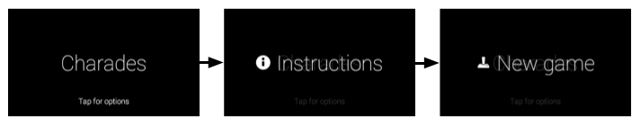
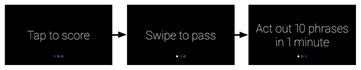
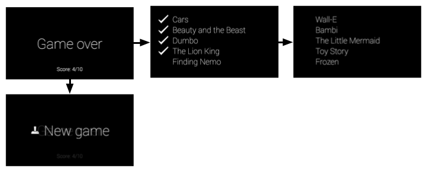
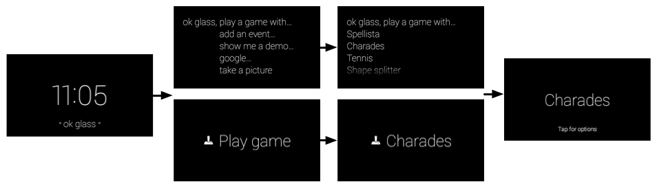

This guide describes the components that comprise a simple immersion experience, in the form of a Charades game. Games are a perfect use-case for immersions because most require a custom UI and input controls.
Along the way, you’ll also learn design, development, and distribution tips that are important to building your own Glassware.
The full source of the Charades game is available on Github. Import it into Android Studio before you begin, because this guide refers to it heavily.
README for invocation details.You’ll learn how to use components from the Android SDK to build the bulk of the Charades immersion and then the GDK to hook into the Glass experience. Here’s a list of topics that you’ll learn about:
Before you start developing, take some time and design your Glassware. Doing this gives you a good idea of what UI flows work best on Glass, what voice command you’ll use, and how your cards will look.
Of course, designing Glassware is an iterative process and some of the things that you design now will change, but having a good portion of this work done in the beginning is crucial to building a great experience.
Designing the UI flow is a simple exercise and lets you visualize your Glassware before writing a line of code. We do it all the time for the Glassware that we build!
Let’s go over the major UI elements of the Charades immersion, so you get an idea of how the UI works and how helpful this process can be when creating your own Glassware.
This screen is the first one users see when they start the Charades immersion. It allows users to orient themselves before having to jump into the gaming experience and is a general gaming construct that users are familiar with.
When users tap on the touchpad, a menu system with two items appears, New Game and Instructions.

When creating immersions, input mechanisms are sometimes novel, so it’s useful to let users know how they should interact with the immersion, especially with a game.
This set of cards shows the instructions for the game and guides users on how to play and what gestures to use to navigate through the UI. Users get to it by tapping on the Instructions menu item from the splash screen.

These screens comprise the main gameplay flow. Users can get to this flow by tapping on the New game menu item from the splash screen.
This set of cards shows a random word (up to 10). Users skip a word by swiping forward and tap the touchpad when they correctly describe the word.
This screen shows the results of the game. The “Game over” screen initially appears and users can swipe forward to see the game results. When users tap on any of the results cards, the New Game menu item appears to let users start another game.

You should figure out a voice command fairly early in the design process. Voice commands let users start Glassware from the Glass Home (clock card) voice menu, if needed, and is a major part of how you design Glassware.
For example, the Post an update command works well in a fire-and-forget model, where users speak the command and some text and the Glassware processes it without any further user intervention. This lets users get back to what they’re doing quickly.
On the other hand, for something like Play a game, you’ll usually want to land users on a splash screen so that they can get oriented first. Because this voice command most likely launches an immersion, you can expect users to be okay with seeing extra screens and menus to start the game. Immediately throwing users into a gaming experience right after the voice command is typically a bad experience for games.
Charades uses the Play a game voice command . After users invoke the voice command, the Charades splash screen appears, prompting users to Tap for more options (New game or Instructions in this case).

Note: Glass automatically adds a touch command to the main menu if users choose to tap instead of speak the voice command.
Whether you’re building immersions or live cards, you should use the CardBuilder [TODO: SWITCH LINK] or XML layouts [TODO: SWITCH LINK] when possible.
Oftentimes, you’ll still need to build your own layout so follow our UI guidelines to have the best looking Glassware.
The Stopwatch follows the general layout guidelines, but has custom UI layouts using standard Android components like views and layouts.
Designing Tip:
The Mirror API Playground (not available) is a useful tool for mocking GDK cards. You can use one of the templates as a starting point, edit the HTML for the card, and see changes in real time.
You can then use the mock as a reference to create your custom XML layouts in Android.
To develop immersions, you use the same tools you’d use for Android development to build the bulk of the Glassware and then use the APIs in the GDK add-on to access Glass-specific functionality, such as gesture detectors and voice commands.
You’ll frequently use common Android components to create Glassware, but keep in mind that some concepts are sometimes different. For example, do not equate an immersion with an Android activity. Immersions are experiences designed for Glass that are built with one or many Android activities, as well as many other components of the GDK and Android SDK.
The rest of the Develop sections go over how the Charades game is structured and the major components of the project that you imported earlier. It’s useful to have Android Studio up now so that you can follow along. The source code itself is commented, so this section goes over the high-level purpose of each file and helpful tips that you can apply to your own Glassware.
Here’s a brief overview of the major components of Charades:
Development Tip:
A benefit of designing your UI flow is that they naturally help you structure your actual development. Each major flow that we went over before translates to a single activity of the immersion.
You create voice commands with an XML resource file that specifies the command you’re using and then by specifying the XML resource in the AndroidManifest.xml file.
The following files are associated with the Charades voice command:
res/xml/voice_trigger_play_a_game .xml - Declares the voice command to use.AndroidManifest.xml - Declares the activity to start when the voice command is spoken.Development Tip:
Check out the list of existing commands.
For development purposes, you can declare any voice command you want by using voice development mode.
The splash screen is the first thing users see when starting Charades and orients them before starting the game.
The following files are associated with this activity:
res/layout/activity_start_game.xml - Declares the layout for the splash screen.res/menu/start_game.xml - Declares the menu system for the splash screen, which contains Instructions and New game menu items.res/values/dimens.xml - Declares standard card dimensions and padding that this project’s activities use to follow Glass style.src/com/google/android/glass/sample/charades/StartGameActivity.java - The main class for the splash screen.res/drawable-hdpi/ic_game_50.png - The menu icon for New game.res/drawable-hdpi/ic_help_50.png - The menu icon for Instructions.It’s always a good idea to separate a game’s model (the state of the game) from the UI. The CharadesModel class tracks the game’s score and how many phrases have been guessed in the gameplay mode and the various instructions and whether or not users have gone through them in the instructions mode.
The following files are associated with the game model:
src/com/google/android/glass/sample/charades/CharadesModel.javaBecause the tutorial and gameplay modes of the game share very similar functionality and UIs, this base class defines the common functionality for both. The activities for the instructions and gameplay modes extend this class.
The following files are associated with this activity:
res/layout/activity_game_play.xml - Defines the layout that is shared by the gameplay and instructions modes of Charades.src/com/google/android/glass/sample/charades/BaseGameActivity.java - Defines the base functionality of the gameplay and instructions modes of Charades, which is shared.The instructions activity shows three cards that explain how to play the game. It detects whether or not users carry out the action displayed on the card before they can continue.
The following files are associated with this activity:
src/com/google/android/glass/sample/charades/TutorialActivity.java - Extends BaseGameActivity and defines what instruction text to show and how to handle gestures as users go through the instructions for the game.The gameplay activity defines the main flow of the game. It figures out what words to show, how to keep score, has a gesture detector to handle gestures, and launches the results activity when the game is over.
The following files are associated with this activity:
GamePlayActivity - Extends BaseGameActivity and contains the main gameflow logic.The result activity shows the guessed words, unguessed words, and the score for the game. It also contains a menu item that lets users start a new game.
The following files are associated with this activity:
res/layout/game_results.xml - Defines the layout for the “Game over” cardres/layout/card_results_summary.xml - Defines the layout for showing the guessed and unguessed words in a list.res/layout/table_row_result.xml - Defines an individual row layout for the results summary.src/com/google/android/glass/sample/charades/GameResultsActivity.java - Defines the actual activity that shows the layouts and menus defined by the aforementioned XML resources.res/raw/sad_trombone.ogg - The sound to play when users don’t get through all the words.res/raw/triumph.ogg - The sound to play when users get through all 10 words.res/drawable-hdpi/ic_done_50.png - The checkmark icon that appears by words that are correctly guessed.These animation resources add extra polish to Charades:
res/anim/slide_out_left.xml - This animates an exiting view to slide out to the left (for instance, when a word is passed).res/anim/slide_in_right.xml - This animates an entering view to slide in from the right (for instance, when a new word enters into view).res/anim/tug_right.xml - This defines a tugging animation if you swipe on a view that doesn’t consume the swipe. This lets users know that the swipe had no effect.Development Tip:
The UI widgets [TODO: ADD LINK] developer guide shows you more standard UI practices.
The AndroidManifest.xml file describes the major components of your Glassware so the system knows how to run it. The manifest for Charades declares the following things:
Portions of this page are reproduced from work created and shared by Google and used according to terms described in the Creative Commons 4.0 Attribution License.